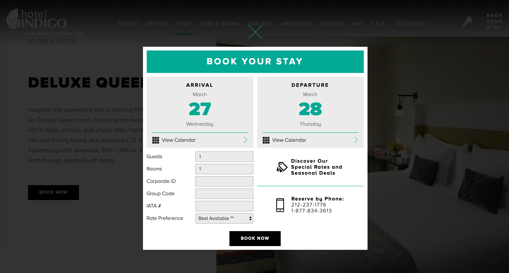
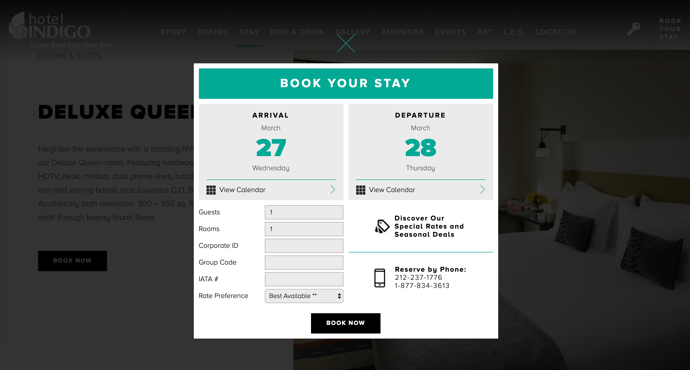

Overview
Adcetris is a drug that treats six types of lymphoma (a type of cancer). While working at Evoke Giant, I was placed on a team tasked with improving the usabilty and reducing the bouce rates of the Adcetris.com homepage. This homepage serves as a gateway into six different sections of the site, each section containing specific information about how Adcetris is used in relation to each lymphoma type. Since Adcetris is used differently for each condition, ensuring users knew how to access the section of the site related to their type of lymphoma was crucial.

Problem
Data pulled from Google Analytics and Hotjar showed that users were not progressing into the lymphoma type-specific sections of the website, and were instead scrolling up and down the page before leaving the site all together (bouncing). This meant that not only were users not entering the section of the website specific to their type of lymphoma, but more importantly implied that they weren't understanding how to move beyond the homepage at all. We focused our project on the mobile experience first since that is where the majority of site visits were originating.
Solution
We relied on heatmap, click/tap tracking, and user testing data to inform our redesign of the Adcetris.com landing page. The chosen design solution better communicates intended user behavior which ultimately reduces bounce and ensures users enter the interior pages related to their type of lymphoma.
Team and Role
- UX/UI designer — myself
- UX researcher — Emily Schepp
- Analytics director — Jason Luis
- Senior copywriter — Helen Wilson
- Account lead — Diliana Funtarova
- Senior developer — John Vehikite
 

Research
We attacked the problem from multiple angles to ensure we came up with a well-rounded solution. We utilized Hotjar to track user click/tap and scroll behavior, explored the competitive landscape to evaluate how other multi-condition medications designed their websites to help users navigate, as well as conducted remote user testing of our proposed design solutions.
Scroll behavior
Data pulled from Google Analytics and Hotjar showed that users were not progressing into the lymphoma type-specific sections of the website, and were instead scrolling up and down the page before leaving the site all together (bouncing). This meant that not only were users not entering the section of the website specific to their type of lymphoma, but more importantly implied that they weren't understanding how to move beyond the homepage at all. We focused our project on the mobile experience first since that is where the majority of site visits were originating.
Solution
We relied on heatmap, click/tap tracking, and user testing data to inform our redesign of the Adcetris.com landing page. The chosen design solution better communicates intended user behavior which ultimately reduces bounce and ensures users enter the interior pages related to their type of lymphoma.
Team and Role
- UX/UI designer — myself
- UX researcher — Emily Schepp
- Analytics director — Jason Luis
- Senior copywriter — Helen Wilson
- Account lead — Diliana Funtarova
- Senior developer — John Vehikite
Research
The reservation process was most in need of an overhaul, so I did compentitive research and looked at reservation processes across other hotel and resort websites. The common elements I saw in the market, but found missing from the current Booth Lake site were the ability to access reservations directly from room detail pages, a calendar showing room availability directly on the room's information page, and a quick breakdown of room features and amenities.
Design
This project was a full top-to-bottom overhaul starting with redesigning the site's information architecture and sitemap, as well as a UI redesign and streamlining of its UX and user flows.
Sitemap

Wireframes

UX
On the Bookings page, I created a step-by-step process to walk users through reserving a cabin. Step one asks the user to select which cabin they’re interested in via a dropdown menu. Once selected, that cabin’s availability calendar and pricing information pops up with a second step requesting they select which dates they wish to visit. Step three is where users enter their contact information so Booth Lake Landing can connect back with them via email, collect their payment information, and finalize their booking.
To work in concert with the Bookings page, I consolidated all cabin information onto each cabin’s Overview page. This allows users to see all the relevant details about each cabin — photos, a description, and pricing information — as well as that cabin’s availability calendar, all from the same screen.
UI
My PM at Sitecast wanted to ensure the site had a modern, app-like feel. To accomplish this I incorporated layers, transparency, and shadows, as well as brought in design elements often used in mobile apps like modal overlays and forward and back buttons on pages, allowing users to navigate within the site (such as between individual cabin or activity overviews).
To incorporate regional photography per the client's wishes, I utilized photos with dark and light overlays for the majority of the backgrounds on each page, sometimes using multiple images to break up pages with clearly delineated sections. I played with transparency of site elements to allow the photography to show through as much as possible.